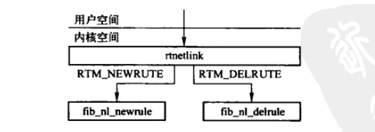
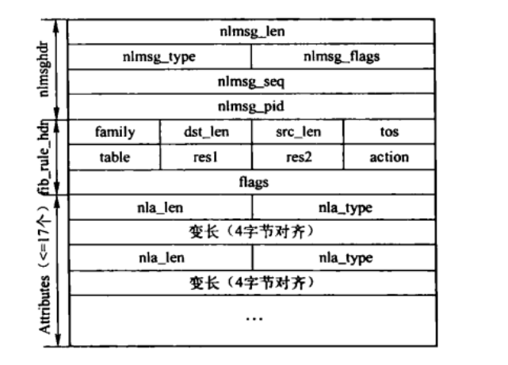

路由策略
Table of Contents
路由策略数据库的规则用于控制选择路由的算法，因特网上采用的路由算法一般基于数据报的目的地址。 在实际的应用中，不只是需要通过数据报的目的地址选择路由，还需要通过其他域（源地址、IP协议、传输层端口甚至数据报负载），这就称为策略路由。
在这种情况下，就需要使用路由策略数据库（routing policy database–RPDB）来代替传统的路由表，其可以匹配的域包括： 数据报源地址、目的地址、服务类型、输入网络接口等。
另外可以依赖 iptables 通过fwmark为某些数据报做标记，如此就能够根据ip协议和传输层端口来匹配策略路由。
每个路由策略有一个选择符（selector）和一个操作（action）组成。系统按照顺序搜索路由策略数据库，将选择符和{源地址、目的地址、输入接口、服务类型、fwmark}等关键字进行匹配，匹配成功则执行action定义的操作。 操作如果失败，则停止搜索路由策略；如果操作成功，则继续查询路由策略数据库。
1. 路由策略组织结构
Linux支持多种协议族，其中ipv4、ipv6以及Decnet协议都支持策略路由。系统中将不同协议组的路由策略入口 fib_rules_ops 实例都用 fib_rule_register() 注册到 rules_ops 链表，通过协议族标识符family区分，同一个协议族的路由策略挂接在对应协议族的 fib_rules_ops 实例的 rule_list 上。
Figure 1: 路由策略结构图
1.1. fib_rules_ops结构
fib_rules_ops结构用于支持多种协议族的路由策略，每个协议族都会实现该结构的实例。
IPv4中，fib_rules_ops结构是 fib4_rules_ops，路由策略结构是 fib4_rule，所有fib4_rule结构挂姐在 fib4_rule_ops 的 rules_list 链表上。
struct fib_rules_ops { int family; //协议族 struct list_head list; //用于挂接到 rules_ops 链表 int rule_size; //该协议族路由策略结构的大小 //根据策略查找对应的路由项 int (*action)(struct fib_rule *, struct flowi *, int, struct fib_lookup_arg *); //根据flowi 进行策略的比较，用于根据源地址、目的地址和服务类型查找策略 int (*match)(struct fib_rule *, struct flowi *, int); //添加新策略时，对策略中相应的成员进行赋值和设置 int (*configure)(struct fib_rule *, struct sk_buff *, struct nlmsghdr *, struct fib_rule_hdr *, struct nlattr **); //根据条件进行策略的比较，用于根据条件查找策略，在删除策略时调用 int (*compare)(struct fib_rule *, struct fib_rule_hdr *, struct nlattr **); //应用程序获取具体策略信息时，用于填充对应的信息 int (*fill)(struct fib_rule *, struct sk_buff *, struct nlmsghdr *, struct fib_rule_hdr *); //在添加新路由策略时，如果没有设置优先级，则通过该接口获取默认优先级 u32 (*default_pref)(void); //在添加或者删除策略后，需要组播同志加入nlgroup标识组的进程，因此需要构造SKB，此接口用于计算payload长度。 size_t (*nlmsg_payload)(struct fib_rule *); //在添加或删除策略后，需要组播通知加入nlgroup标识组的进程。 int nlgroup; //指向 nla_policy 结构类型的数组，用于存放netlink属性类型和长度的对照表。ipv4中指向 fib4_rule_policy 数组 struct nla_policy *policy; //用于链接属于该协议族的所有策略结构的双向链表头， ipv4中指向fib4_rules struct list_head *rules_list; struct module *owner; };
1.2. fib_rule结构
fib_rule结构中定义的是各个协议族都需要用到的策略属性，用于构成具体的协议族策略数据结构。
struct fib_rule { //用来将一个协议族的所有fib_rule结构连接成双向循环链表。 struct list_head list; atomic_t refcnt; //策略应用到的网络设备名称和索引 int ifindex; char ifname[IFNAMSIZ]; //mark是数字标签，mark_mask是mark的掩码，在根据flowi进行策略的比较查找时使用。 u32 mark; u32 mark_mask; u32 pref; //路由策略的优先级 u32 flags; //标识，当前只使用了FIB_RULE_PERMANENT,标识策略是固定的，不能够删除。 u32 table; //路由表标识 u8 action; //根据策略查找哦对应的路由项时，确定策略被访问的动作。 struct rcu_head rcu; };
| action取值 | 描述 |
|---|---|
| FR_ACT_UNSPEC | 禁止访问，返回EACCES错误 |
| FR_ACT_TO_TBL | 该策略允许访问，可以通过该策略查找路由 |
| FR_ACT_RES1 | 禁止访问，返回EACCES错误 |
| FR_ACT_RES2 | 禁止访问，返回EACCES错误 |
| FR_ACT_RES3 | 禁止访问，返回EACCES错误 |
| FR_ACT_RES4 | 禁止访问，返回EACCES错误 |
| FR_ACT_BLACKHOLE | 禁止访问，返回EINVAL错误。报文被丢弃 |
| FR_ACT_UNREACHABLE | 禁止访问，返回ENETUNREACH错误。报文被丢弃，并射程主机不可达的ICMP消息 |
| FR_ACT_PROHIBIT | 禁止访问，返回EACCES错误，报文被丢弃，并生成ICMP报文被过滤的消息 |
1.3. fib4_rule 结构
fib4_rule结构用于存储IPv4协议族的路由策略，挂接在 fib4_rules_ops 的 rules_list 字段指向的 fib4_rules 链表上。
通过 ip rule 命令可以配置或者查看路由策略。
struct fib4_rule { //所有协议族通用结构 struct fib_rule common; u8 dst_len; //目的IP地址长度 u8 src_len; //源IP地址长度 u8 tos; //用于匹配IP首部的TOS字段。 //只有从以（src, srcmask）为（IP地址，网络掩码）的源网络发送的报文才能被接受。 __be32 src; __be32 srcmask; //只能向dst 和 dstmask组成的 目的网络发送报文 __be32 dst; __be32 dstmask; u32 tclassid; //分类标签 };
2. 三个默认路由策略
如果支持策略路由，则在系统初始化时，IPv4协议族中总会创建三个路由策略，分别是 default_rule、main_rule和local_rule，分别对应于 RT_TABLE_DEFAULT路由表、RT_TABLE_MAIN路由表和 RT_TABLE_LOCAL路由表，其中local_rule被标记为 FIB_RULE_PERMANENT，表示不能删除。
3. IPv4协议族的 fib_rules_ops 结构实例
static struct fib_rules_ops fib4_rules_ops = { .family = AF_INET, .rule_size = sizeof(struct fib4_rule), .action = fib4_rule_action, .match = fib4_rule_match, .configure = fib4_rule_configure, .compare = fib4_rule_compare, .fill = fib4_rule_fill, .default_pref = fib4_rule_default_pref, .nlmsg_payload = fib4_rule_nlmsg_payload, .nlgroup = RTNLGRP_IPV4_RULE, .policy = fib4_rule_policy, .rules_list = &fib4_rules, .owner = THIS_MODULE, };
3.1. fib4_rule_action()
fib4_rule_action()的功能是在策略关联的路由表中，根据key查找对应的路由项。
static int fib4_rule_action(struct fib_rule *rule, //已经获取到的路由策略 struct flowi *flp, //用于查找路由项的条件 int flags, struct fib_lookup_arg *arg) //用于存放命中的路由项 { int err = -EAGAIN; struct fib_table *tbl; switch (rule->action) { case FR_ACT_TO_TBL: //只有该标识可以继续操作。 break; case FR_ACT_UNREACHABLE: err = -ENETUNREACH; goto errout; case FR_ACT_PROHIBIT: err = -EACCES; goto errout; case FR_ACT_BLACKHOLE: default: err = -EINVAL; goto errout; } //根据路由表ID获取路由表实例 if ((tbl = fib_get_table(rule->table)) == NULL) goto errout; //根据查找路由项的key,在获取的路由表中查找路由项 err = tbl->tb_lookup(tbl, flp, (struct fib_result *) arg->result); if (err > 0) err = -EAGAIN; errout: return err; }
3.2. fib4_rule_match()
该函数用于在查找路由项时，根据源地址、目的地址和服务类型匹配策略。
static int fib4_rule_match(struct fib_rule *rule, struct flowi *fl, int flags) { struct fib4_rule *r = (struct fib4_rule *) rule; __be32 daddr = fl->fl4_dst; __be32 saddr = fl->fl4_src; if (((saddr ^ r->src) & r->srcmask) || ((daddr ^ r->dst) & r->dstmask)) return 0; if (r->tos && (r->tos != fl->fl4_tos)) return 0; return 1; }
3.3. fib4_rule_configure()
该函数用于在添加新策略时，对策略中相应的成员进行赋值和设置。
static int fib4_rule_configure(struct fib_rule *rule, //需要进行设置的策略 struct sk_buff *skb, struct nlmsghdr *nlh, struct fib_rule_hdr *frh, //添加路由策略消息中的策略首部 struct nlattr **tb) //添加路由策略消息中的可选策略属性 { int err = -EINVAL; struct fib4_rule *rule4 = (struct fib4_rule *) rule; if (frh->src_len > 32 || frh->dst_len > 32 || (frh->tos & ~IPTOS_TOS_MASK)) goto errout; //如果没有指定对应的路由表，则获取一个空闲的路由表与该策略关联。 if (rule->table == RT_TABLE_UNSPEC) { if (rule->action == FR_ACT_TO_TBL) { struct fib_table *table; table = fib_empty_table(); if (table == NULL) { err = -ENOBUFS; goto errout; } rule->table = table->tb_id; } } //开始对策略的属性赋值 if (tb[FRA_SRC]) rule4->src = nla_get_be32(tb[FRA_SRC]); if (tb[FRA_DST]) rule4->dst = nla_get_be32(tb[FRA_DST]); if (tb[FRA_FLOW]) rule4->tclassid = nla_get_u32(tb[FRA_FLOW]); rule4->src_len = frh->src_len; rule4->srcmask = inet_make_mask(rule4->src_len); rule4->dst_len = frh->dst_len; rule4->dstmask = inet_make_mask(rule4->dst_len); rule4->tos = frh->tos; err = 0; errout: return err; }
3.4. fib4_rule_compare()
该函数用来在删除策略时，根据条件进行策略的比较和查找。
static int fib4_rule_compare(struct fib_rule *rule, struct fib_rule_hdr *frh, struct nlattr **tb) { struct fib4_rule *rule4 = (struct fib4_rule *) rule; if (frh->src_len && (rule4->src_len != frh->src_len)) return 0; if (frh->dst_len && (rule4->dst_len != frh->dst_len)) return 0; if (frh->tos && (rule4->tos != frh->tos)) return 0; if (tb[FRA_FLOW] && (rule4->tclassid != nla_get_u32(tb[FRA_FLOW]))) return 0; if (tb[FRA_SRC] && (rule4->src != nla_get_be32(tb[FRA_SRC]))) return 0; if (tb[FRA_DST] && (rule4->dst != nla_get_be32(tb[FRA_DST]))) return 0; return 1; }
3.5. fib4_rule_fill()
当应用程序获取具体的策略信息时，通过该函数来填充返回的信息。
static int fib4_rule_fill(struct fib_rule *rule, struct sk_buff *skb, struct nlmsghdr *nlh, struct fib_rule_hdr *frh) { struct fib4_rule *rule4 = (struct fib4_rule *) rule; frh->family = AF_INET; frh->dst_len = rule4->dst_len; frh->src_len = rule4->src_len; frh->tos = rule4->tos; if (rule4->dst_len) NLA_PUT_BE32(skb, FRA_DST, rule4->dst); if (rule4->src_len) NLA_PUT_BE32(skb, FRA_SRC, rule4->src); if (rule4->tclassid) NLA_PUT_U32(skb, FRA_FLOW, rule4->tclassid); return 0; nla_put_failure: return -ENOBUFS; }
3.6. fib4_rule_default_pref()
在添加新路由策略时，如果没有设置优先级，则调用该函数获取默认优先级。
static u32 fib4_rule_default_pref(void) { struct list_head *pos; struct fib_rule *rule; if (!list_empty(&fib4_rules)) { pos = fib4_rules.next; if (pos->next != &fib4_rules) { rule = list_entry(pos->next, struct fib_rule, list); if (rule->pref) return rule->pref - 1; } } return 0; }
4. netlink接口
Linux的路由策略的操作只提供了 netlink 接口，可通过 IPROUTE2 包的ip命令操作路由策略。

Figure 2: rtnetlink接口
4.1. netlink路由策略消息结构
ip rule add/del 命令用来添加或者删除路由策略，配置过程中的通信依靠netlink来实现。

Figure 3: 添加和删除路由策略的netlink消息格式
| 字段 | 长度 | 描述 |
|---|---|---|
| family | 8位 | 标识操作的路由表项所属的地址族（AF_INET等） |
| dst_len | 8位 | 目的地址长度 |
| src_len | 8位 | 源IP地址长度 |
| tos | 8位 | TOS |
| table | 8位 | 该策略对应的路由表ID |
| action | 8位 | 根据策略查找对应的路由项时，确定被访问的动作 |
| flags | 32位 | 当前只是用了FIB_RULE_PERMANENT，标识策略不能被删除 |
| Attributes | - | 属性，标识配置的各种值 |
| 属性 | 描述 |
|---|---|
| FRA_DST | 目的IP地址 |
| FRA_SRC | 源IP地址 |
| FRA_IFNAME | 策略应用的输入网络设备名称 |
| FRA_PRIORITY | 路由策略的优先级 |
| FRA_FWMARK | 数字标签 |
| FRA_FLOW | 分类标签 |
| FRA_TABLE | 扩展策略对应的路由表ID。如果设置，则会替代fib_fule_hdr结构中的table |
| FRA_FWMASK | mark的掩码 |
4.2. fib_nl_newrule()
通过 netlink 添加路由策略时，会调用 fib_nl_newrule()。
int fib_nl_newrule(struct sk_buff *skb, struct nlmsghdr* nlh, void *arg) { struct fib_rule_hdr *frh = nlmsg_data(nlh); struct fib_rules_ops *ops = NULL; struct fib_rule *rule, *r, *last = NULL; struct nlattr *tb[FRA_MAX+1]; int err = -EINVAL; if (nlh->nlmsg_len < nlmsg_msg_size(sizeof(*frh))) //检测消息长度 goto errout; ops = lookup_rules_ops(frh->family); //获取对应协议族的策略入口 if (ops == NULL) { err = EAFNOSUPPORT; goto errout; } err = nlmsg_parse(nlh, sizeof(*frh), tb, FRA_MAX, ops->policy); //解析策略的扩展部分 if (err < 0) goto errout; rule = kzalloc(ops->rule_size, GFP_KERNEL); //创建新路由策略 if (rule == NULL) { err = -ENOMEM; goto errout; } //后续流程将策略首部和扩展部分的属性设置到新建的策略中，并添加策略 if (tb[FRA_PRIORITY]) rule->pref = nla_get_u32(tb[FRA_PRIORITY]); if (tb[FRA_IFNAME]) { struct net_device *dev; rule->ifindex = -1; nla_strlcpy(rule->ifname, tb[FRA_IFNAME], IFNAMSIZ); dev = __dev_get_by_name(rule->ifname); if (dev) rule->ifindex = dev->ifindex; } if (tb[FRA_FWMARK]) { rule->mark = nla_get_u32(tb[FRA_FWMARK]); if (rule->mark) /* compatibility: if the mark value is non-zero all bits * are compared unless a mask is explicitly specified. */ rule->mark_mask = 0xFFFFFFFF; } if (tb[FRA_FWMASK]) rule->mark_mask = nla_get_u32(tb[FRA_FWMASK]); rule->action = frh->action; rule->flags = frh->flags; rule->table = frh_get_table(frh, tb); if (!rule->pref && ops->default_pref) rule->pref = ops->default_pref(); err = ops->configure(rule, skb, nlh, frh, tb); if (err < 0) goto errout_free; list_for_each_entry(r, ops->rules_list, list) { if (r->pref > rule->pref) break; last = r; } fib_rule_get(rule); if (last) list_add_rcu(&rule->list, &last->list); else list_add_rcu(&rule->list, ops->rules_list); notify_rule_change(RTM_NEWRULE, rule, ops, nlh, NETLINK_CB(skb).pid); rules_ops_put(ops); return 0; //错误处理 errout_free: kfree(rule); errout: rules_ops_put(ops); return err; }
4.3. fib_nl_delrule()
通过netlink删除路由策略时，调用fib_nl_delrule()处理。
int fib_nl_delrule(struct sk_buff *skb, struct nlmsghdr* nlh, void *arg) { struct fib_rule_hdr *frh = nlmsg_data(nlh); struct fib_rules_ops *ops = NULL; struct fib_rule *rule; struct nlattr *tb[FRA_MAX+1]; int err = -EINVAL; if (nlh->nlmsg_len < nlmsg_msg_size(sizeof(*frh))) //检测长度 goto errout; ops = lookup_rules_ops(frh->family); //查找对应策略协议族的入口 if (ops == NULL) { err = EAFNOSUPPORT; goto errout; } //解析策略的扩展部分 err = nlmsg_parse(nlh, sizeof(*frh), tb, FRA_MAX, ops->policy); if (err < 0) goto errout; //遍历路由策略，比较属性，删除符合条件的策略 list_for_each_entry(rule, ops->rules_list, list) { if (frh->action && (frh->action != rule->action)) continue; if (frh->table && (frh_get_table(frh, tb) != rule->table)) continue; if (tb[FRA_PRIORITY] && (rule->pref != nla_get_u32(tb[FRA_PRIORITY]))) continue; if (tb[FRA_IFNAME] && nla_strcmp(tb[FRA_IFNAME], rule->ifname)) continue; if (tb[FRA_FWMARK] && (rule->mark != nla_get_u32(tb[FRA_FWMARK]))) continue; if (tb[FRA_FWMASK] && (rule->mark_mask != nla_get_u32(tb[FRA_FWMASK]))) continue; if (!ops->compare(rule, frh, tb)) continue; if (rule->flags & FIB_RULE_PERMANENT) { err = -EPERM; goto errout; } list_del_rcu(&rule->list); synchronize_rcu(); //通过netlink通知 RTM_DELRULE 消息 notify_rule_change(RTM_DELRULE, rule, ops, nlh, NETLINK_CB(skb).pid); fib_rule_put(rule); rules_ops_put(ops); return 0; } err = -ENOENT; errout: rules_ops_put(ops); return err; }
5. 网络设备状态改变的影响
一条路由策略可以与一个设备关联。例如，可以为从设备eth0接收且目的地为子网 10.10.1.0/24 的数据流分配一个特定优先级。所以当设备注销时，通过 fib_rules_detach() 将设备IP设置为-1，表示与其相关的所有策略应当被标记为不可用。 当网络设备注册时，如果与该设备存在相关联且禁用的策略，则通过 fib_rules_attach() 来重新使能这些策略。
初始化策略模块时，会调用 fib_rules_init() 将 fib_rules_notifier 注册到系统中，当网络设备状态发生变化时，会调用 fib_rules_event() 进行处理。接收到 NETDEV_REGISTER 事件后， 会遍历所有策略，与该网络设备状态变化相关联的策略都会被重新安装。 如果接收到 NETDEV_UNREGISTER 事件，也会遍历所有策略，禁用相关的策略。
6. 策略路由的查找
当使用策略路由时，总是先在路由缓存内查找。如果查找失败，则根据配置策略选择路由表，从路由表中查找路由。
Figure 4: 策略路由的查找
fib_lookup() 并不直接查找路由项，而是先查找策略，如果查找策略命中，才继续查找路由项。
在支持策略路由时，fib_lookup 会调用策略模块中的 fib_rules_lookup() 。
int fib_rules_lookup(struct fib_rules_ops *ops, struct flowi *fl, int flags, struct fib_lookup_arg *arg) { struct fib_rule *rule; int err; rcu_read_lock(); //遍历查找所有的策略 list_for_each_entry_rcu(rule, ops->rules_list, list) { if (!fib_rule_match(rule, ops, fl, flags)) //匹配每个策略项 continue; err = ops->action(rule, fl, flags, arg); //根据key，在策略关联的路由表中查找路由项 if (err != -EAGAIN) { fib_rule_get(rule); arg->rule = rule; goto out; } } err = -ENETUNREACH; out: rcu_read_unlock(); return err; }